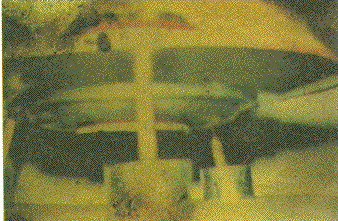

"Billy" Eduard Albert Meier ("BEAM") naît à Bülach (Suisse) le . Il
est le 2ᵉ de 7 enfants. Son père est cordonnier.
Le , Meier (5 ans) aurait observé au côté de son père un grand "disque" argenté. Vers la fin
de cette année, il aurait reçu un contact télépathique d'un extraterrestre, une expérience qui l'aurait
particulièrement effrayé. En , il aurait expérimenté un premier voyage à bord d'un
vaisseau extraterrestre, avec un très vieil homme, nommé Sfath, venant de l'amas stellaire des Pleiades. Ce dernier
lui aurait prodigué un vaste enseignement spirituel et matériel.
A partir du , Asket, une femme extraterrestre de l'univers DAL, aurait pris la
suite de Sfath. Jusqu'en 1964, sous sa tutelle, Meier aurait effectué de longs voyages en Europe et en Asie, afin
d'apprendre et d'étudier de nombreuses capacités et professions, et de se préparer à sa future mission de prophète,
médiateur, et enseignant. Ils auraient également voyagé ensemble dans le passé et rencontré et parlé avec Jmmanuel,
qui aurait vécu il y a 2000 ans. Meier produira même des photos de dinosaures supposément prises lors d'un tel
voyage dans le temps.
En haut une des photos de dinosaures présentée par Meier. En fait la photographie d'une illustration de
Zdenek Burian publiée en 1972 dans le livre Life Before Man écrit par Zdenek V. Spinar "Dinosaur
Photo Deconstruction", IIG
Le à Iskenderun (Turquie), Meier perd son bras
gauche dans un accident de voiture. Le , il rencontre K. M. à Saloniki (Grèce),
et l'épouse 2 mois plus tard. Il voyagent et vivent en Turquie, au Pakistan et en Inde notamment. Le , leur fille Gilgamesha naît à Quetta.
Au cours d'un de ses longs voyages en Orient, à Téhéran (Iran), il rencontre une femme
américaine nommée July Reed. Meier porte alors un chapeau noir et un ceinturon de pistolet, qui font penser Reed à
"Billy le Kid", le légendaire bandit de l'ouest américain. Il gardera alors ce surnom de "Billy".
Plus tard, à leur retour en Suisse, Meier et sa femme ont 2 fils : Atlantis-Sokrates le , et Methusalem le .
Semjase
Le , il aurait entamé une série de plus d'une centaine de contacts avec Semjase
Sem la bible, à l'origine du mot "semaine", une pleiadienne.
Au cours de ces différents contacts il aurait été autorisé à photographier son vaisseau en manoeuvre de vol. Il a
pris plus d'un millier de photos, parmi les plus nettes jamais prises. Les conversations des contacts ont été
écrites mot pour mot, incluant des éléments sur l'histoire de la Terre, et des sujets d'humanités, de sciences et de
spiritualité.
C'est par la suite qu'il fonde avec ses adeptes le FIGU
(acronyme allemand signifiant ''communauté libre d'intérêts pour les sciences de l'inconnu et de la spiritualité et
les études ufologiques"). En plus de publier et distribuer les expériences et photographies, films de Meier, le
FIGU
prend position contre la surpopulation, les abus sur femmes et enfants, la protection des animaux, les droits de
l'homme, la protection de la planète Terre et de la vie de la vie végétale, animale et humaine.
Une des fameuses photos de Meier, prise le
Ainsi durant plus d'un demi-siècle, Meier aurait maintenu une série de contacts physiques et télépathiques avec des
êtres extraterrestres déclarant venir de l'amas stellaire des Pleiades. En tant que méditateur et porte-parole des
pléiadiens de la planète Erra, Meier déclare transmettre leur enseignement ésotériques et leurs sagesse et les aider
dans leur lourde tâche de ramener l'humanité dans le chemin qu'il ont quitté depuis longtemps.
Meier avec un "pistolet laser" emprunté à Menary le
À Menara centre de Semjase de l'étoile d'argent
Il aurait également rencontré d'autres personnages, nommés Quetzal, Nera, Taldja, Menara, Pleja, Florena, etc.
Ptaah
Entre , Billy aurait eu en moyenne 4 contacts/an avec Ptaah, le père de Semjase, et
totaliserait plus de 250 à ce jour.
Meier a de nombreux détracteurs. En 1995, Kal Korff publie un livre Korf, K.: Spaceships
of the Pleiades: The Billy Meier
Story, Prometheus Books, 1995. Le , déguisé et sous le nom d'emprunt de Steve
Thomas, accompagné de Tina Layton, Korff visite le Semjase-Silver-Star-Center de Schmidrüti. Durant 2 jours, il
discute plusieurs heures avec des membres du FIGU. Il fera une seconde visite le .

Photo issue d'un négatif abîmé trouvé dans la grange de Meier
Martin Sorge présentera même une photo issue d'un négatif en partie brûlé, confié par la femme de
Meier, trouvé dans la grande de Meier, montrant apparemment un modèle réduit posé sur une table. Meier admit qu'il
possédait des modèles réduit de vaisseaux pleiadiens réalisés par ses enfants à partir de ses descriptions.
Meier
Certains détracteurs de Meier indiqueront qu'il prétend être la réincarnation de Jésus-Christ, ce qu'il démentira
formellement.
Brookesmith, Peter: "The
camera never lies?"Bartholomaus, Derek & Alvarado, Ivan: "The
Billy Meier Case", IIG, 2011